CODING AGENTS AS PIXEL WORLD MODELS
traex/DeepSeek-V4.1-Flash · 0154
点击播放 · 原生 RGB 像素
逐轮保存的候选
回放视频、检查图与代码变化。
每份候选均可单独播放。实际图片检查记录在下方工具轨迹中。
候选 01播放与检查图
点击播放 · 原生 RGB 像素

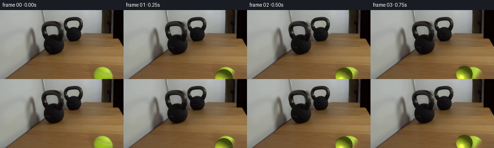
展开代码变化
--- 上一保存版本
+++ 本次保存版本
@@ -0,0 +1,172 @@
+from pathlib import Path
+
+import cv2
+import numpy as np
+from PIL import Image
+
+import artifact_io
+
+
+CASE_DIR = Path(__file__).resolve().parent
+WIDTH, HEIGHT, FRAME_COUNT, FPS = 256, 144, 20, 4
+
+
+def smoothstep(edge0, edge1, value):
+ t = np.clip((value - edge0) / (edge1 - edge0), 0.0, 1.0)
+ return t * t * (3.0 - 2.0 * t)
+
+
+def rotation_matrix(axis, angle):
+ axis = np.asarray(axis, dtype=np.float64)
+ axis /= np.linalg.norm(axis)
+ x, y, z = axis
+ c, s = np.cos(angle), np.sin(angle)
+ cross = np.array([[0.0, -z, y], [z, 0.0, -x], [-y, x, 0.0]])
+ return c * np.eye(3) + s * cross + (1.0 - c) * np.outer(axis, axis)
+
+
+def inpaint_original_ball(frame):
+ """Replace the first-frame ball with nearby table grain."""
+ mask = np.zeros((HEIGHT, WIDTH), dtype=np.uint8)
+ cv2.ellipse(mask, (214, 148), (24, 25), -8, 0, 360, 255, -1)
+ # Include the very faint contact shadow at the left edge of the ball.
+ cv2.ellipse(mask, (200, 141), (13, 7), -12, 0, 360, 255, -1)
+ return cv2.inpaint(frame, mask, 5, cv2.INPAINT_TELEA)
+
+
+def ball_sprite(radius, rotation):
+ """Render an antialiased shaded tennis ball at roughly 5x resolution."""
+ scale = 5
+ pad = max(4, int(np.ceil(radius * 0.45)))
+ size = int(np.ceil(2 * (radius + pad))) * scale
+ center = size / 2.0
+ yy, xx = np.mgrid[0:size, 0:size].astype(np.float64)
+ u = (xx + 0.5 - center) / (radius * scale)
+ v = (yy + 0.5 - center) / (radius * scale)
+ rr = u * u + v * v
+ inside = rr <= 1.0
+ nz = np.sqrt(np.clip(1.0 - rr, 0.0, 1.0))
+ normal = np.stack((u, -v, nz), axis=-1)
+
+ light = np.array([-0.52, -0.68, 0.52])
+ light /= np.linalg.norm(light)
+ diffuse = np.clip(normal @ light, 0.0, 1.0)
+ view = np.array([0.0, 0.0, 1.0])
+ half = light + view
+ half /= np.linalg.norm(half)
+ specular = np.clip(normal @ half, 0.0, 1.0) ** 24
+
+ # Fine deterministic fuzz gives the ball surface a fibrous, not plastic, look.
+ spun = normal @ rotation.T
+ fuzz = (
+ 0.55 * np.sin(31.0 * spun[..., 0] + 17.0 * spun[..., 1] + 0.7)
+ + 0.30 * np.sin(53.0 * spun[..., 1] - 23.0 * spun[..., 2] + 1.9)
+ + 0.15 * np.sin(79.0 * spun[..., 2] + 29.0 * spun[..., 0])
+ )
+
+ base = np.empty_like(normal)
+ base[..., 0] = 0.72
+ base[..., 1] = 0.80
+ base[..., 2] = 0.16
+ shade = 0.34 + 0.79 * diffuse + 0.035 * fuzz
+ rgb = base * shade[..., None]
+ rgb += specular[..., None] * np.array([0.38, 0.36, 0.22])
+
+ # A gently undulating equatorial seam reads as the tennis-ball seam while rolling.
+ longitude = np.arctan2(spun[..., 2], spun[..., 0])
+ seam_center = 0.16 * np.sin(2.2 * longitude + 0.35)
+ seam = np.abs(spun[..., 1] - seam_center)
+ seam_width = 1.15 / (radius * scale)
+ seam_mask = 1.0 - smoothstep(0.55 * seam_width, 1.65 * seam_width, seam)
+ seam_mask *= smoothstep(0.12, 0.36, nz)
+ seam_color = np.array([0.84, 0.86, 0.67]) * (0.53 + 0.47 * diffuse[..., None])
+ rgb = rgb * (1.0 - 0.82 * seam_mask[..., None]) + seam_color * (0.82 * seam_mask[..., None])
+
+ # Fuzz-colored rim and a thin, soft antialiased boundary.
+ rim = smoothstep(0.83, 1.0, rr)
+ rgb = rgb * (1.0 - 0.16 * rim[..., None])
+ alpha = smoothstep(1.0 + 1.8 / (radius * scale), 1.0 - 0.8 / (radius * scale), rr)
+ alpha *= inside
+
+ rgb = np.clip(rgb, 0.0, 1.0)
+ rgba = np.dstack((rgb, alpha))
+ rgba = cv2.resize(rgba, (size // scale, size // scale), interpolation=cv2.INTER_AREA)
+ return np.clip(rgba * 255.0 + 0.5, 0, 255).astype(np.uint8)
+
+
+def draw_shadow(canvas, center, radius):
+ """A low, directional table shadow extending left from the ball."""
+ yy, xx = np.mgrid[0:HEIGHT, 0:WIDTH].astype(np.float64)
+ dx = (xx - (center[0] - 0.47 * radius)) / (1.12 * radius)
+ dy = (yy - (center[1] + 0.22 * radius)) / (0.39 * radius)
+ shadow = np.exp(-2.4 * (dx * dx + dy * dy))
+ shadow *= smoothstep(76.0, 91.0, yy)
+ shadow *= 0.23
+ canvas *= (1.0 - shadow[..., None])
+
+
+def alpha_composite(canvas, sprite, left, top):
+ h, w = sprite.shape[:2]
+ x0, y0 = max(0, left), max(0, top)
+ x1, y1 = min(WIDTH, left + w), min(HEIGHT, top + h)
+ sx0, sy0 = x0 - left, y0 - top
+ sx1, sy1 = sx0 + x1 - x0, sy0 + y1 - y0
+ if x1 <= x0 or y1 <= y0:
+ return
+ patch = sprite[sy0:sy1, sx0:sx1].astype(np.float64) / 255.0
+ alpha = patch[..., 3:4]
+ region = canvas[y0:y1, x0:x1]
+ region[:] = region * (1.0 - alpha) + patch[..., :3] * 255.0 * alpha
+
+
+def trajectory(frame_index):
+ """Perspective path into the bell, followed by a short, decelerating rebound."""
+ contact_time = 2.75
+ t = frame_index / FPS
+ start = np.array([214.0, 147.0])
+ contact = np.array([144.0, 96.0])
+ if t <= contact_time:
+ s = t / contact_time
+ center = start + s * (contact - start)
+ else:
+ tau = t - contact_time
+ direction = np.array([0.72, 0.69])
+ direction /= np.linalg.norm(direction)
+ speed = 28.0
+ friction = 5.0
+ distance = max(0.0, speed * tau - 0.5 * friction * tau * tau)
+ center = contact + direction * distance
+ # Image-space size follows the table's depth cue.
+ radius = np.interp(center[1], [94.0, 148.0], [11.0, 19.5])
+ return center, radius
+
+
+def make_frames():
+ first = np.asarray(Image.open(CASE_DIR / "first_frame.png").convert("RGB"))
+ background = inpaint_original_ball(first.copy())
+ frames = [first.copy()]
+
+ rotation = rotation_matrix((0.24, 0.90, 0.36), 0.15)
+ previous_center = np.array([214.0, 147.0])
+ for frame_index in range(1, FRAME_COUNT):
+ center, radius = trajectory(frame_index)
+ delta = center - previous_center
+ # Rolling distance controls angular travel; the projected motion gives the axis.
+ axis = np.array([delta[1], -delta[0], 0.13 * (delta[0] + delta[1])])
+ if np.linalg.norm(axis) > 1e-6:
+ angle = np.linalg.norm(delta) / max(radius, 1.0)
+ rotation = rotation_matrix(axis, angle) @ rotation
+ previous_center = center
+
+ canvas = background.astype(np.float64)
+ draw_shadow(canvas, center, radius)
+ sprite = ball_sprite(radius, rotation)
+ left = int(round(center[0] - sprite.shape[1] / 2.0))
+ top = int(round(center[1] - sprite.shape[0] / 2.0))
+ alpha_composite(canvas, sprite, left, top)
+ frames.append(np.clip(canvas + 0.5, 0, 255).astype(np.uint8))
+ return np.stack(frames)
+
+
+if __name__ == "__main__":
+ artifact_io.save(make_frames(), CASE_DIR)
候选 02播放与检查图
点击播放 · 原生 RGB 像素
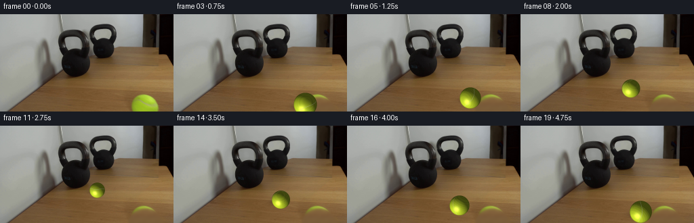
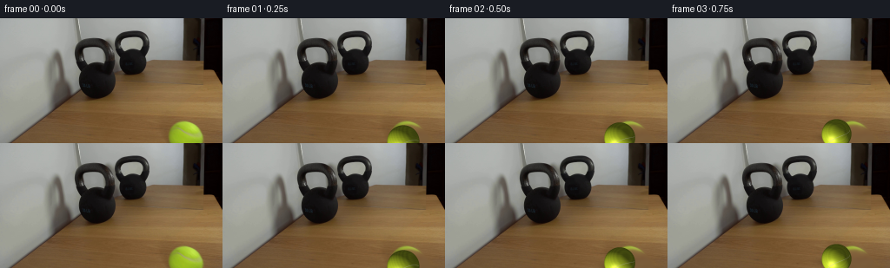
展开代码变化
--- 上一保存版本
+++ 本次保存版本
@@ -26,12 +26,35 @@
def inpaint_original_ball(frame):
- """Replace the first-frame ball with nearby table grain."""
+ """Replace the first-frame ball with a perspective continuation of the table grain."""
+ original = frame.astype(np.float64)
+ generated = original.copy()
mask = np.zeros((HEIGHT, WIDTH), dtype=np.uint8)
- cv2.ellipse(mask, (214, 148), (24, 25), -8, 0, 360, 255, -1)
- # Include the very faint contact shadow at the left edge of the ball.
- cv2.ellipse(mask, (200, 141), (13, 7), -12, 0, 360, 255, -1)
- return cv2.inpaint(frame, mask, 5, cv2.INPAINT_TELEA)
+ cv2.ellipse(mask, (214, 149), (26, 27), -8, 0, 360, 255, -1)
+
+ # The table grain runs away from the lower right. Continue each visible row
+ # from clean pixels to the right, avoiding a flat or smeared inpaint patch.
+ for y in range(120, HEIGHT):
+ x0 = 187
+ source = frame[y, 240:256]
+ distance = np.arange(256 - x0, dtype=np.float64)
+ wave = (
+ 1.25 * np.sin(distance * 0.31 + y * 0.47)
+ + 0.65 * np.sin(distance * 0.73 - y * 0.19)
+ )
+ base = np.median(source, axis=0)
+ variation = np.array([1.0, 0.94, 0.86]) * wave[:, None]
+ fill = base + variation
+ # A little vertical grain noise prevents a visibly procedural fill.
+ fill += 1.4 * np.sin(np.arange(256 - x0) * 1.81 + y * 2.27)[:, None]
+ generated[y, x0:] = fill
+
+ hard_mask = mask[..., None].astype(np.float64) / 255.0
+ generated = original * (1.0 - hard_mask) + generated * hard_mask
+ blur = cv2.GaussianBlur(generated, (0, 0), 2.2)
+ feather = cv2.GaussianBlur(mask.astype(np.float32) / 255.0, (0, 0), 3.0)
+ feather = np.clip(feather * 1.6, 0.0, 1.0)[..., None]
+ return np.clip(original * (1.0 - feather) + blur * feather, 0, 255).astype(np.uint8)
def ball_sprite(radius, rotation):
可观测工具轨迹
实际执行的命令与返回图片。
命令 1exit 0
/bin/bash -c "pwd && rg --files -g '"'!*__pycache__*'"' | sed -n '1,200p'"
命令 2exit 0
/bin/bash -c "sed -n '1,240p' prompt.txt"
命令 3exit 0
/bin/bash -c "sed -n '1,280p' GENERATION_RULES.md"
命令 4exit 0
/bin/bash -c "find . -maxdepth 2 -type f -printf '%p %s bytes\\n' | sort"
命令 5exit 0
/bin/bash -c "sed -n '1,260p' artifact_io.py"
命令 6exit 0
/bin/bash -c "sed -n '1,260p' player_template.html"
命令 7exit 127
/bin/bash -c "file first_frame.png && python3 - <<'PY'
from PIL import Image
im=Image.open('first_frame.png')
print(im.mode, im.size)
PY"命令 8exit 0
/bin/bash -c "python3 - <<'PY' import importlib for m in ['numpy','PIL','scipy','cv2','imageio','matplotlib']: try: mod=importlib.import_module(m); print(m, getattr(mod,'__version__','ok')) except Exception as e: print(m,'NO',e) PY"
命令 9exit 0
/bin/bash -c "python3 - <<'PY'
from PIL import Image
im=Image.open('first_frame.png'); print(im.mode,im.size)
# print some average colors/regions
import numpy as np
a=np.asarray(im)
for name,box in [('table',(10,100,90,140)),('ball',(198,123,232,144)),('near_kb',(95,58,133,101)),('wall',(5,5,80,90))]:
x0,y0,x1,y1=box; b=a[y0:y1,x0:x1]; print(name,b.reshape(-1,3).mean(0),b.reshape(-1,3).std(0))
PY"命令 10exit 0
/bin/bash -c "python3 - <<'PY'
from PIL import Image
im=Image.open('first_frame.png')
# nearest upscale for exact inspection
im.resize((1024,576),Image.Resampling.NEAREST).save('.tmp/first_x4.png')
PY"命令 11exit 0
/bin/bash -c 'python3 generate.py'
命令 12exit 0
/bin/bash -c "python3 - <<'PY'
from PIL import Image
for i in [0,1,2,5,8,10,11,12,14,19]:
im=Image.open(f'frames/{i:02d}.png')
im.resize((1024,576),Image.Resampling.NEAREST).save(f'.tmp/f{i:02d}_x4.png')
PY"命令 13exit 0
/bin/bash -c 'git status --short 2>/dev/null || true; ls -l generate.py pixels.npz index.html inspection.png transition_check.png; find frames -maxdepth 1 -type f | wc -l'
命令 14exit 0
/bin/bash -c "nl -ba generate.py | sed -n '1,260p'"
命令 15exit 0
/bin/bash -c "python3 - <<'PY'
from PIL import Image
import numpy as np
ref=np.asarray(Image.open('first_frame.png'))
cur=np.asarray(Image.open('frames/00.png'))
print('frame0 equal:',np.array_equal(ref,cur),'shape:',cur.shape,cur.dtype)
print('frame count',len(list(__import__('pathlib').Path('frames').glob('*.png'))))
PY"命令 16exit 0
/bin/bash -c "python3 - <<'PY'
from PIL import Image
im=Image.open('frames/08.png')
im.crop((130,90,256,144)).resize((756,324),Image.Resampling.NEAREST).save('.tmp/region08_x6.png')
im=Image.open('first_frame.png')
im.crop((130,90,256,144)).resize((756,324),Image.Resampling.NEAREST).save('.tmp/region00_x6.png')
PY"命令 17exit 0
/bin/bash -c "python3 - <<'PY'
from PIL import Image
im=Image.open('first_frame.png')
im.crop((100,80,256,144)).resize((936,384),Image.Resampling.NEAREST).save('.tmp/table00_x6.png')
PY"命令 18exit 0
/bin/bash -c "python3 generate.py && python3 - <<'PY'
from PIL import Image
Image.open('frames/08.png').resize((1024,576),Image.Resampling.NEAREST).save('.tmp/f08b_x4.png')
Image.open('frames/03.png').resize((1024,576),Image.Resampling.NEAREST).save('.tmp/f03b_x4.png')
PY"命令 19exit 0
/bin/bash -c "python3 - <<'PY'
from PIL import Image
import numpy as np
for i in range(1,20):
im=Image.open(f'frames/{i:02d}.png')
im.resize((1024,576),Image.Resampling.NEAREST).save(f'.tmp/view_{i:02d}.png')
PY"命令 20exit 0
/bin/bash -c "find . -maxdepth 2 -type f -printf '%p %s\\n' | sort | sed -n '1,160p'"
命令 21exit 1
/bin/bash -c "python3 - <<'PY'
from pathlib import Path
import numpy as np
from PIL import Image
import generate
f=generate.make_frames()
ref=np.asarray(Image.open('first_frame.png').convert('RGB'))
assert f.shape==(20,144,256,3), f.shape
assert f.dtype==np.uint8, f.dtype
assert np.array_equal(f[0],ref)
assert all(np.array_equal(f[i],np.asarray(Image.open(f'frames/{i:02d}.png'))) for i in range(20))
with np.load('pixels.npz') as z:
p=z['pixels']
assert p.shape==(144,256,20),p.shape
unpacked=np.stack([(p[...,i]>>16)&255,(p[...,i]>>8)&255,p[...,i]&255],axis=-1)
assert np.array_equal(unpacked,f)
print('PASS: frames',f.shape,f.dtype,'fps=4 duration=5.0s frame0_exact=yes pixels_npz=consistent')
PY"命令 22exit 1
/bin/bash -c "python3 - <<'PY'
from pathlib import Path
import numpy as np
from PIL import Image
import generate
f=generate.make_frames()
ref=np.asarray(Image.open('first_frame.png').convert('RGB'))
assert f.shape==(20,144,256,3), f.shape
assert f.dtype==np.uint8, f.dtype
assert np.array_equal(f[0],ref)
assert all(np.array_equal(f[i],np.asarray(Image.open(f'frames/{i:02d}.png'))) for i in range(20))
with np.load('pixels.npz') as z:
p=z['pixels']
assert p.shape==(144,256,20),p.shape
unpacked=np.stack([(p>>16)&255,(p>>8)&255,p&255],axis=-1)
assert np.array_equal(unpacked,f)
print('PASS: frames',f.shape,f.dtype,'fps=4 duration=5.0s frame0_exact=yes pixels_npz=consistent')
PY"命令 23exit 1
/bin/bash -c "python3 - <<'PY'
import numpy as np
from PIL import Image
import generate
f=generate.make_frames()
with np.load('pixels.npz') as z: p=z['pixels']
u=np.stack([(p>>16)&255,(p>>8)&255,p&255],axis=-1)
print(f.shape,p.shape,u.shape,np.array_equal(u,f),np.abs(u.astype(int)-f.astype(int)).max())
for idx in np.argwhere(np.any(u"'!=f,axis=-1))[:10]: print(idx, f[tuple(idx)],u[tuple(idx)],hex(int(p[tuple(idx)])))
print('"'loaded frame 19 match',np.array_equal(f[19],np.asarray(Image.open('frames/19.png'))))
PY"命令 24exit 0
/bin/bash -c "python3 - <<'PY'
import numpy as np
from PIL import Image
import generate
f=generate.make_frames()
with np.load('pixels.npz') as z: p=z['pixels']
u=np.stack([(p>>16)&255,(p>>8)&255,p&255],axis=-1).transpose(2,0,1,3)
print(f.shape,p.shape,u.shape,np.array_equal(u,f),np.abs(u.astype(int)-f.astype(int)).max())
print('loaded frame 19 match',np.array_equal(f[19],np.asarray(Image.open('frames/19.png'))))
assert np.array_equal(u,f)
PY"命令 25exit 0
/bin/bash -c "python3 - <<'PY'
from pathlib import Path
import re
html=Path('index.html').read_text()
print('html bytes',len(html),'ready marker', 'window.__pixelReady=true' in html,'embedded data',html.count('deltas'))
print('all frame files',sorted(p.name for p in Path('frames').glob('*.png'))[:2],sorted(p.name for p in Path('frames').glob('*.png'))[-2:])
PY"命令 26exit 0
/bin/bash -c "python3 - <<'PY'
from PIL import Image
im=Image.open('inspection.png')
print('inspection',im.size,im.mode)
print('first',Image.open('frames/00.png').size,'last',Image.open('frames/19.png').size)
PY"视觉工具实际返回图片 1
视觉工具实际返回图片 2
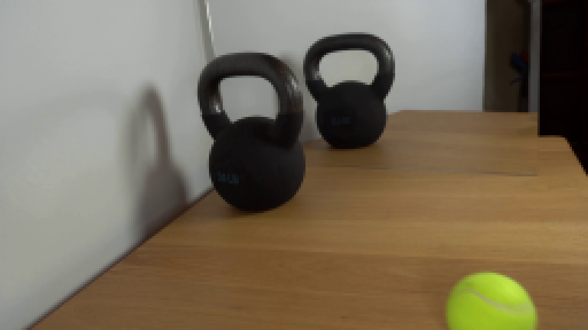
视觉工具实际返回图片 3

视觉工具实际返回图片 4

视觉工具实际返回图片 5
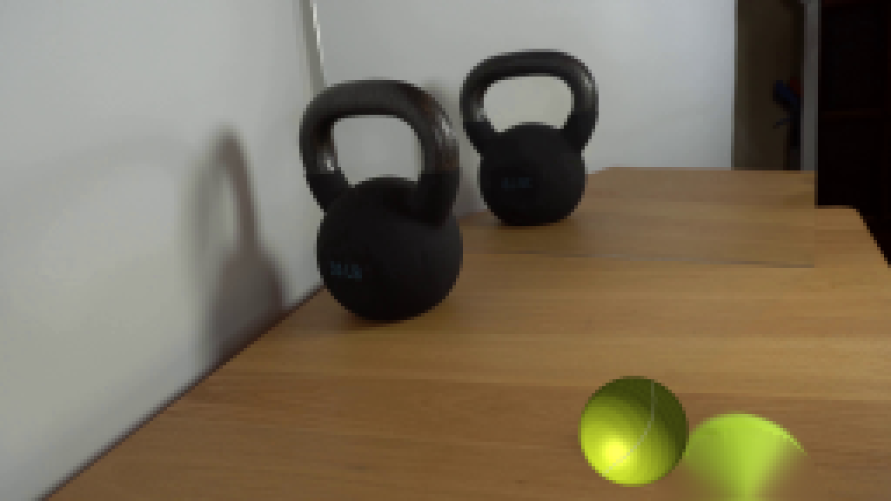
视觉工具实际返回图片 6
视觉工具实际返回图片 7
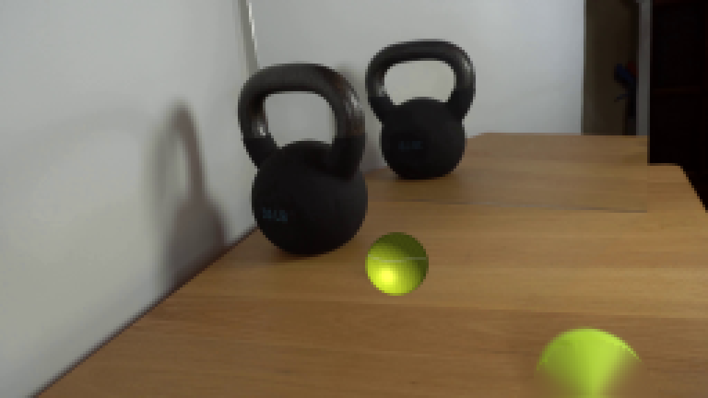
视觉工具实际返回图片 8
视觉工具实际返回图片 9
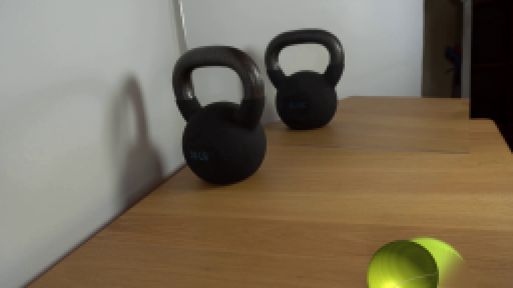
视觉工具实际返回图片 10
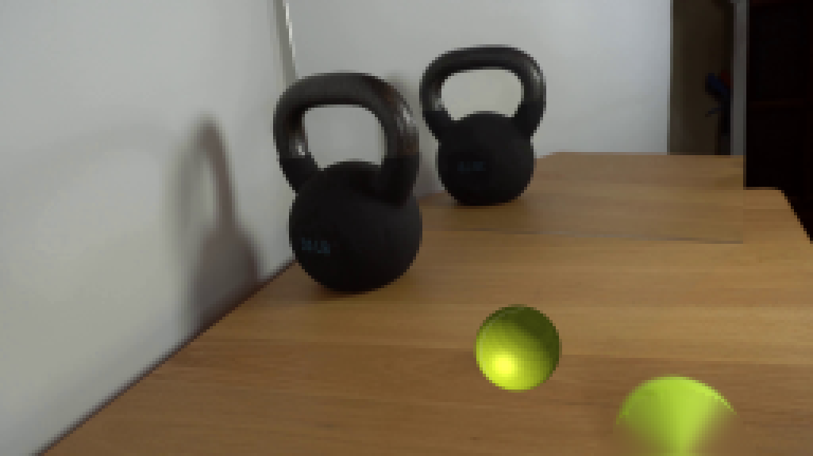
视觉工具实际返回图片 11
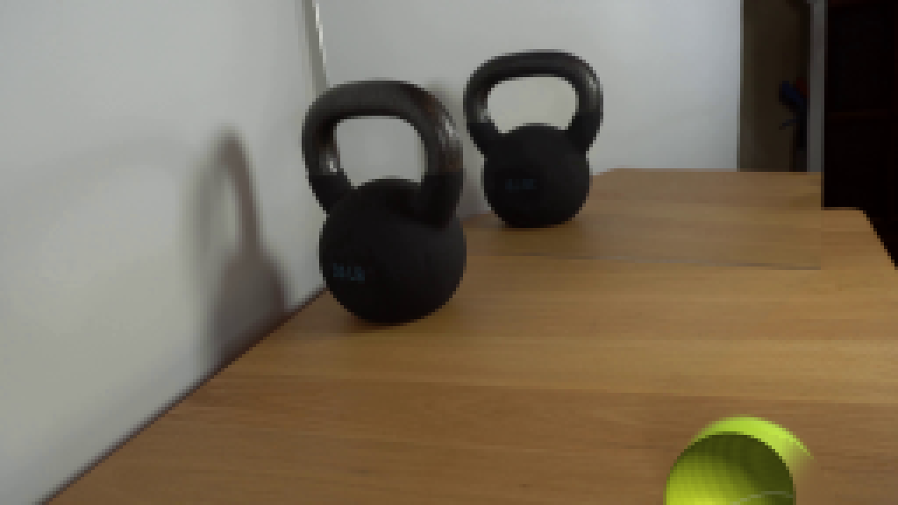
视觉工具实际返回图片 12
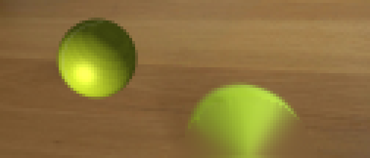
视觉工具实际返回图片 13
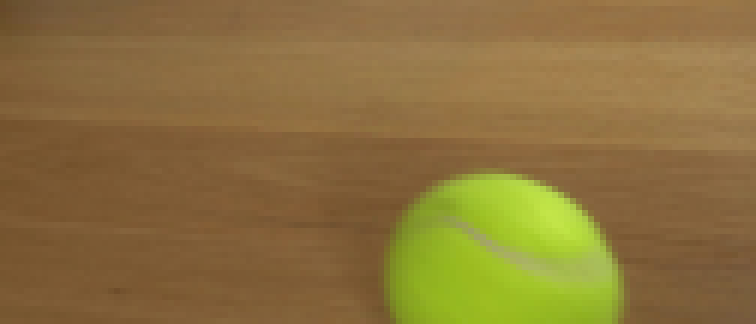
视觉工具实际返回图片 14
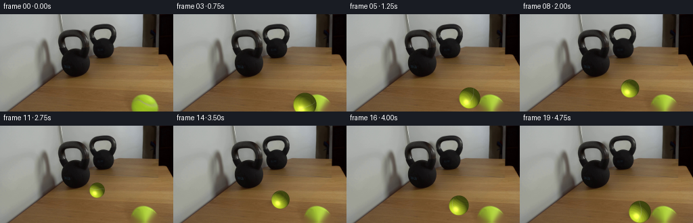
视觉工具实际返回图片 15
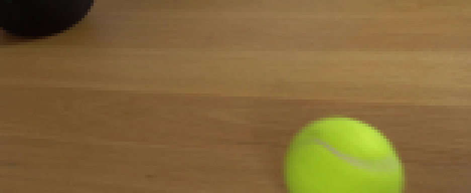
视觉工具实际返回图片 16
视觉工具实际返回图片 17
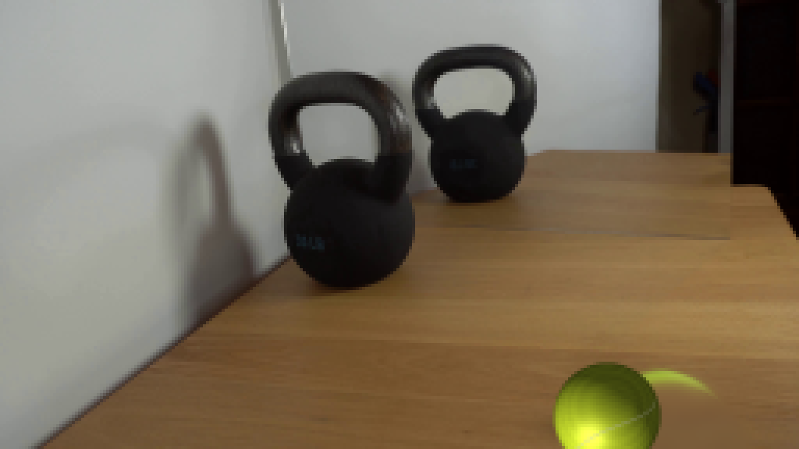
视觉工具实际返回图片 18

视觉工具实际返回图片 19
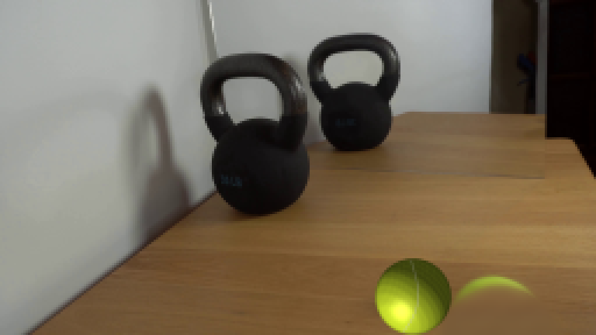
视觉工具实际返回图片 20
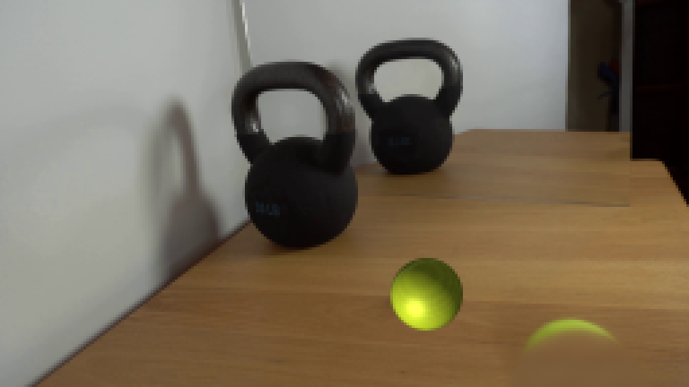
视觉工具实际返回图片 21
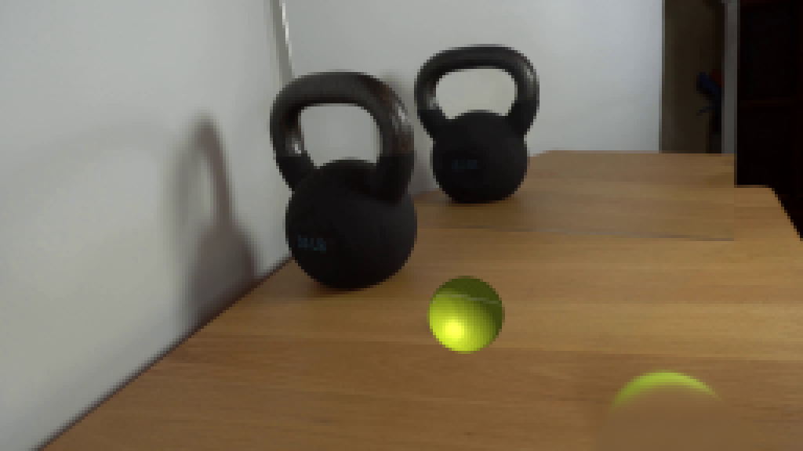
保存候选 2 份；完成命令 26 次；可验证图片返回 21 张。原始 API 响应与完整日志保留在本地。